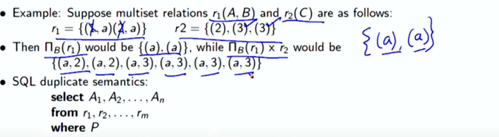

Lecture 2.4 - Introduction to SQL2
Summary
Additional Basic Operations
Cartesian Product
- Finds all possible combinations of tuples from two or more relations.
- Useful when selecting data based on relationships between tables.
- Example: Select all possible instructor-course pairs using Cartesian product:

Rename AS Operation
- Allows renaming of relations and attributes using the
asclause:
- Optional keyword
asmay be omitted.

String Values
- SQL includes a string-matching operator (
like) for character string comparisons. - Uses special characters:
- Percent (%) matches any substring
- Underscore (_) matches any character
- Example: Find instructors with "dar" in their name:

• Patterns are case sensitive • Pattern matching examples: ◦ ’Intro%’ matches any string beginning with “Intro” ◦ ’%Comp%’ matches any string containing “Comp” as a substring ◦ ’- - -’ matches any string of exactly three characters ◦ ’ _ _%’ matches any string of at least two characters • SQL supports a variety of string operations such as ◦ concatenation (using “||”) ◦ converting from upper to lower case (and vice versa) ◦ finding string length, extracting substrings, et
Order By Clause
- Orders the display of tuples in ascending or descending order.
- By default, it is in ascending order.
- Can order by multiple attributes.
- Example: Order by name in descending order:

Select Top / Fetch Clause
- Limits the number of records returned in the output.
- Useful for large tables to avoid performance impact.
- Example: Select the top 10 distinct names from the instructor table:
Where Clause Predicates
- Allows selecting tuples that meet specified conditions.
- Uses comparison operators, logical operators, and functions.
- Between operator allows specifying a range of values.
- Example: Find instructors with salaries between $90,000 and $100,000:
In Operator
- Allows specifying multiple values in a where clause.
- Shorthand for multiple
orconditions. - Example: Find instructors in the 'Comp. Sci.' or 'Biology' departments:
Tuple comparison
select name, course_id
from instructor , teaches
where (instructor.ID, dept name) = (teaches.ID, ’Biology’);
Duplicates ????
- SQL handles duplicates based on multiset semantics.
- Number of copies of tuples in the result depends on the number of copies in the input relations.
- For example, if there are two copies of tuple (1, a) in r1 and three copies of tuple (2) in r2, then the expression:

would result in six copies of tuple (a, 2).